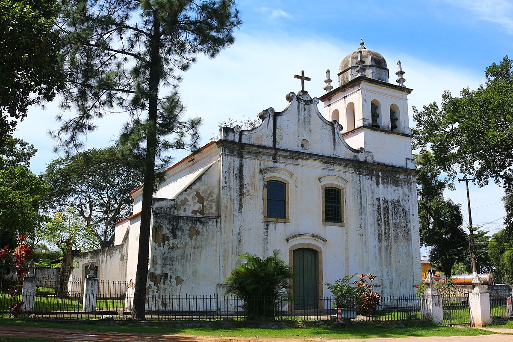
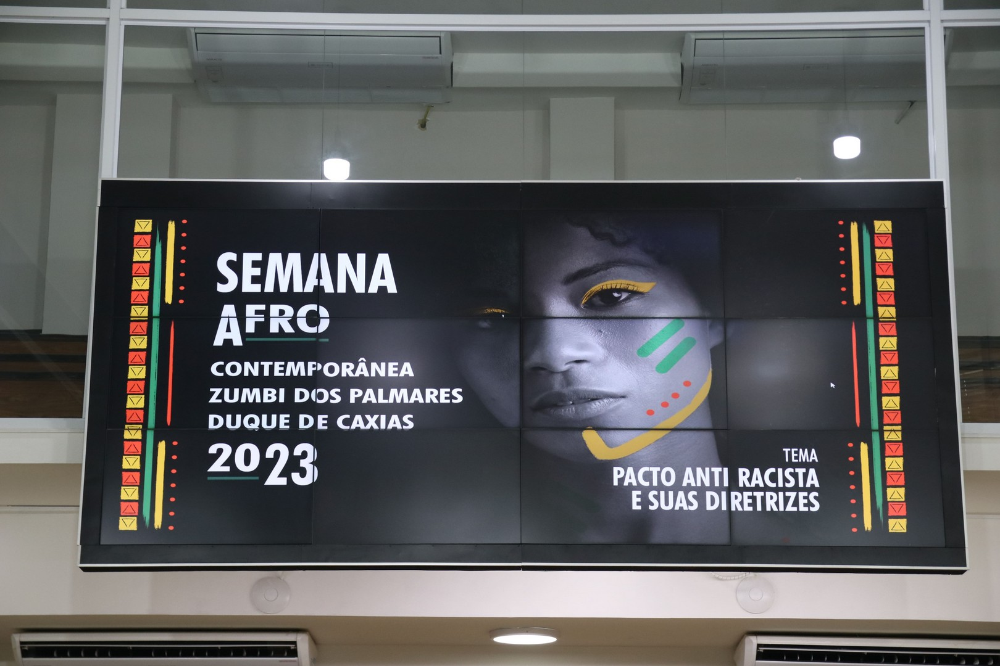
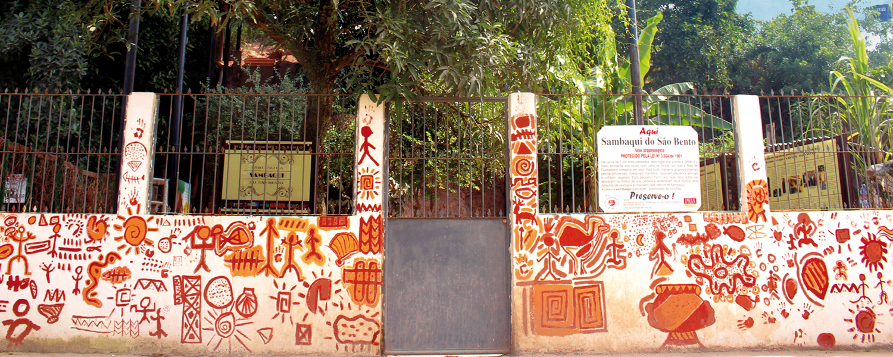
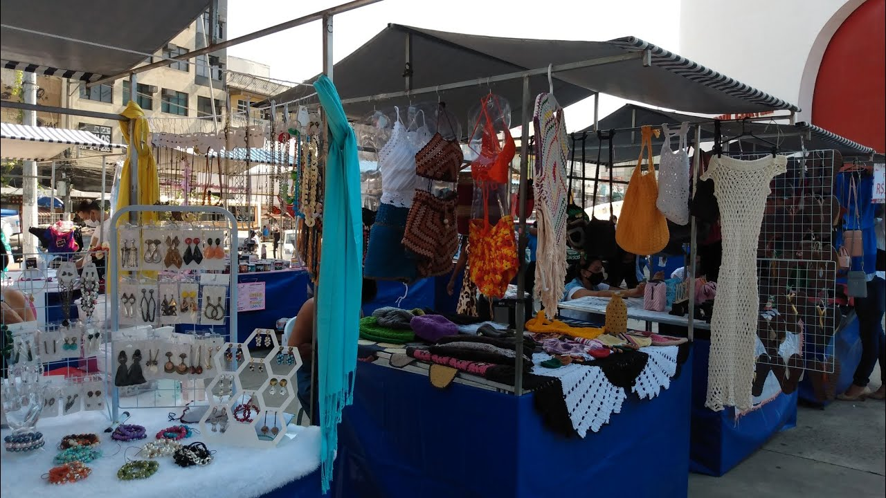
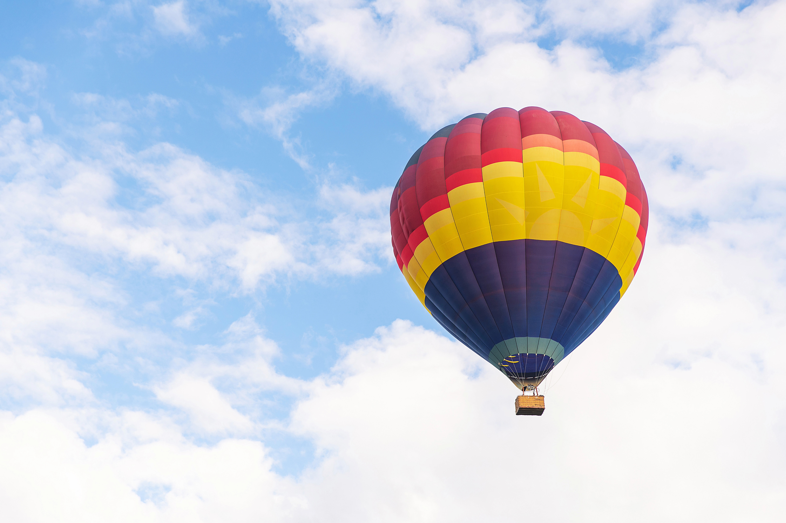

Historical Places. The Nossa Senhora do Pilar Mother Church was built in 1720.

Brazilian Culture. Founded in 1985, the Afro Cultural Group Ojuobá Axé's mission is to promote Afro-Brazilian culture and is based in Centenário, one of the main communities in the municipality of Duque de Caxias. Museums. The Science and Life Museum is located in the heart of the city of Duque de Caxias and has the mission of popularizing and spreading culture, science and art. The space houses various temporary exhibitions, a planetarium, auditoriums and rooms for workshops, such as robotics workshops, workshops for teachers, a film club, lectures, seminars, among others.

Archaeological sites. The Sambaqui do São Bento Archaeological Site is made up of hills of mollusc shells, crustacean carapaces, fish bones, birds and small mammals, which indicate how the first inhabitants, known as the “Sambaquis People”, of Duque de Caxias lived.

Duque de Caxias Arts and Crafts Fair. The Artisan Fair has handcrafted products that will delight you and everyone you give a gift to.

Outstanding experiences. A captive balloon flight takes place at the Aeroclube de Xerém.